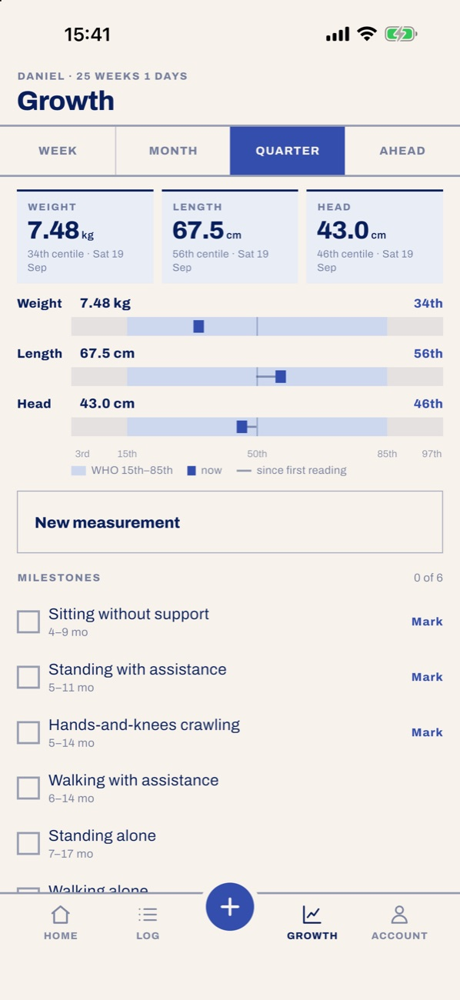

Lớn lên, đo bằng chuẩn WHO
Mỗi lần cân đo cho ra bách phân vị ngay khi bạn gõ. Thước đo cho thấy bé đang ở đâu so với dải 15–85 và đã đi được bao xa kể từ lúc sinh.
Tuổi hiệu chỉnh cho bé sinh non · mốc vận động theo WHO

Daniel · bé trai